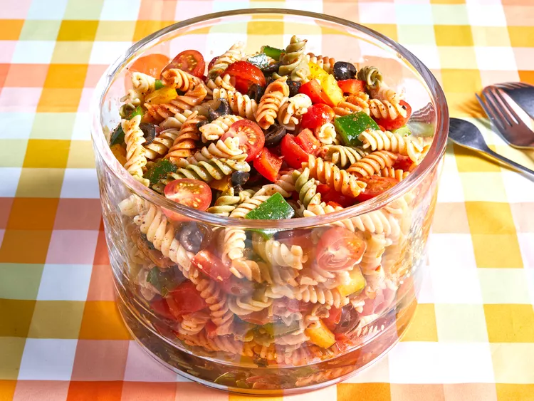

Pasta Salad

Description
This pasta salad is nice and colorful, easy to make, and great for summer
picnics or parties. The recipe was given to me by a dear friend many years
ago, and I've been making it ever since!
Ingredients
- 1 pound tri-colored pasta
- bottle of italian-style dressing
- salad seasoning mix
- cherry tomatoes
- 3 bellpeppers (green, yellow, and red)
- can of black olives
Steps
- Cook and drain the pasta.
- Whisk the dressing with seasoning mix.
- Slice tomatoes and olives in half, thinly slice bellpeppers.
- Combine pasta with vegetables, then toss in seasoned dressing.